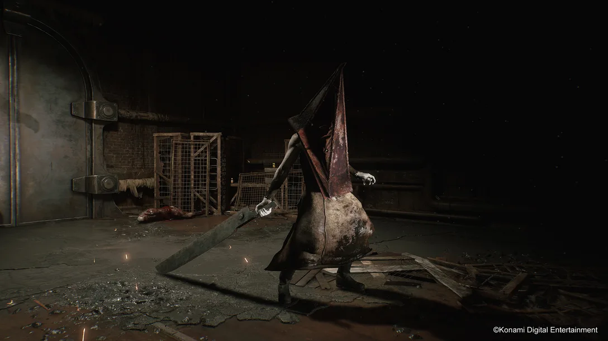
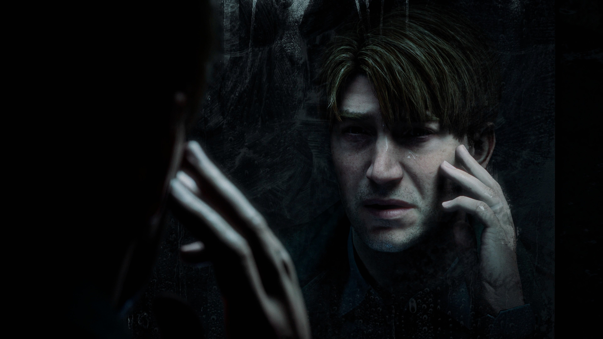

Silent hill 2 es mucho más apegado a Signalis, aunque no me encantó tanto su ambientación como el primero, su historia es mucho más profunda y su diseño de sonido supera a su predecesor debido a sus menores limitantes de hardware.
Recientemente Silent Hill 2 fue remasterizado, las imagenes que muestro son de dicha remasterización, este es un remaster prácticamente perfecto, la experiencia de juego mejora, los gráficos mejoran y se apega como kola-loka a lo que estableció el primer juego.
Este es Pyramid Head, el antagonista principal de Silent Hill 2 cuyo diseño ha dejado marcado a todos los que lo han jugado. Su diseño no solo es icónico, también queda a la perfección con la historia y con el ambiente.
La culpa y la imposible redención de tus acciones te rodean por todo el juego, no solo tiene el ambiente del primero, tiene una historia que te hace retorcer las entrañas.
back to the principal page